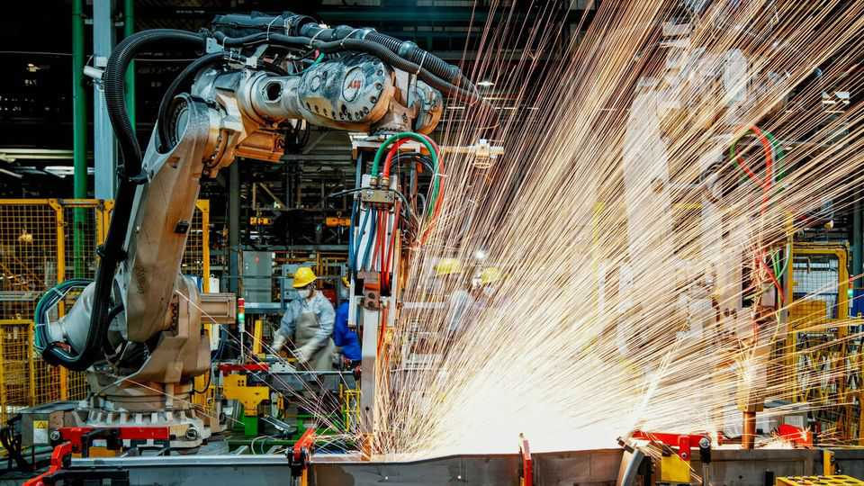
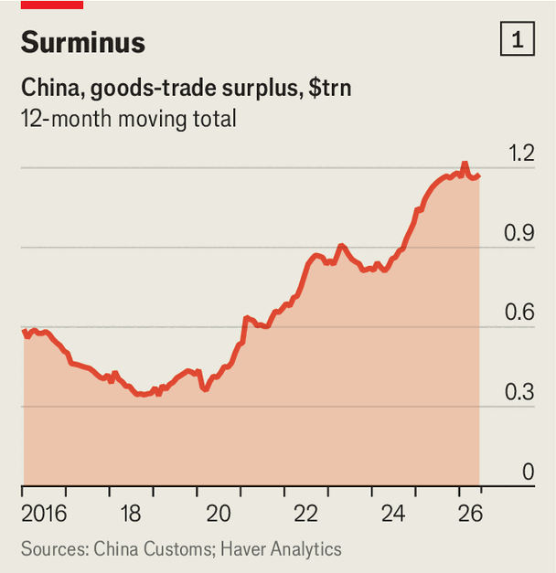
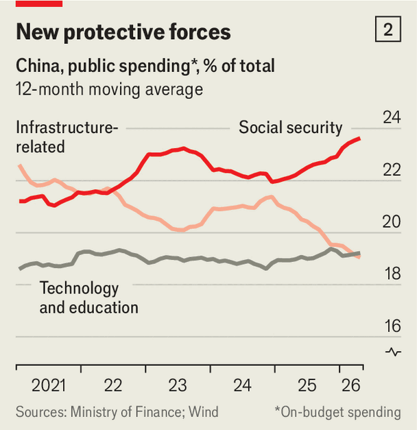

China’s trade gap is narrowing. And other surprises
The world’s second-biggest economy is stumbling into fiscal austerity
July 16th 2026

China’s GDP growth figures are often suspiciously smooth. Last year the government set a target of 5%—and the sprawling $19trn economy duly grew by just that amount, as if the combined endeavours of 760m workers and 30m corporations could be choreographed by a committee. This year the government has permitted itself half a percentage point of drama, setting a target range of 4.5-5%. Few think the official outcome will depart far from this interval.
The GDP numbers for the second quarter, released on July 15th, therefore raised a few eyebrows. The economy grew by 4.3%, year on year. That is hardly a disaster. But it was slower than expected and the weakest since 2022, when China was still imposing citywide lockdowns to fight covid-19.

Even that disappointing number would not have been possible without help from abroad. Last year’s trade surplus exceeded $1.2trn (see chart 1). And in June goods exports surged by more than a quarter in dollar terms, year on year. As containerfuls of merchandise chug towards their destinations, China’s trading partners, especially the European Union, are bracing themselves for a second “China shock” akin to the upheaval after the country’s entry into the World Trade Organisation in 2001.
But a closer look reveals something different. “China’s trade surplus has peaked,” concludes Adam Wolfe of Absolute Strategy Research, a firm of analysts. In June imports rose faster than exports, by 36%. The surplus in the first half of 2026 was lower, in dollar terms, than a year before.
The Iran war is only partly responsible for the turning-point. China is, of course, paying more for oil than it did last year. But it has softened the blow by dramatically cutting the volume of its imports. In explaining the diminishing surplus, crude matters less than chips. China is both a big exporter and a big importer of semiconductors. Its imports of integrated circuits in May, for example, were up by some 70% year on year in dollar terms. That rise was entirely due to higher chip prices.
China’s overdependence on exports has been clear for some time. Many analysts therefore hope its leaders will turn again to fiscal stimulus to lift domestic spending. Meanwhile, the opposite is happening. The government is stumbling into “de facto austerity”, as Xiangrong Yu and Xinyu Ji of Citigroup, a bank, have put it.
Tax revenues have grown strongly in recent months. From January to May the authorities gathered 6.2% more in value-added tax and 12.2% more in personal-income taxes than they did a year before. Thanks to energetic trading in China’s stock markets, stamp duties also brought in far more than usual, rising by 89%.
Some of this reflects the return of inflation, which increases the nominal value of purchases, boosting VAT. The tax authorities have also put more effort into enforcement. Since last year, for instance, automated text messages have instructed taxpayers to declare all their overseas income and assets going back to 2022.
So although the central government is spending more, it is also collecting more. The budget deficit, combining central and local governments, has narrowed a little over the past 12 months. That is the opposite of what stimulus requires—and of what a weak economy needs.
The mix of fiscal spending has also changed in counterintuitive ways. China’s leader, Xi Jinping, champions high-tech manufacturing, calling on entrepreneurs and local officials to cultivate “new productive forces”. He has also warned in the past against “welfarism”, arguing that handouts can make people lazy. You might assume, then, that public spending had drifted towards technology and education and away from social safety-nets.

But as Citi’s economists point out, the emerging fiscal “pecking order” seems instead to favour social security (which includes pensions, unemployment insurance, anti-poverty handouts and efforts to put people back to work). These items’ share of the government’s main budget has grown in recent years (see chart 2). The slice devoted to technology and education has remained steady, and the share ploughed into infrastructure has declined.
This picture does not capture everything. It leaves out China’s state-owned enterprises. It also excludes special government funds, which have their own missions and money. Nonetheless, the numbers reveal some fiscal home truths. In a weak economy and an ageing society, the humdrum demands of the elderly, the unemployed and the poor will always make their presence felt, whatever the leader’s preferences. Chinese technology may be white-hot. But its economy is cooling. And its population is increasingly grey.■
For more expert analysis of the biggest stories in economics, finance and markets, sign up to Money Talks, our weekly subscriber-only newsletter.